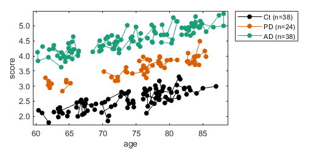
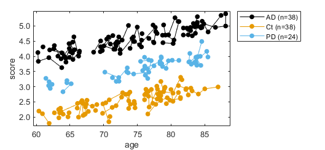
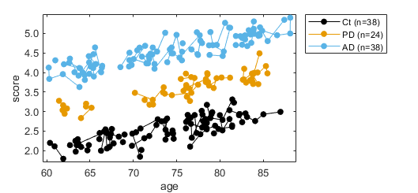
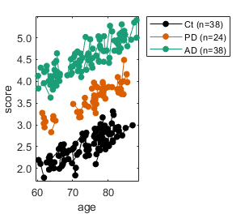
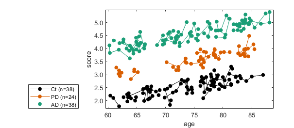

spaghetti_plot
Use this function to plot longitudinal data where participants belong to different groups.

Contents
Intro
Let's start loading synthetic data that simulates the measurement of a given score that was obtained from control participants and from people affected by Parkinson's or Alzheimer's disease.
load('T_for_spaghetti_plot.mat')
Let's take a look at the first n_show elements on this table
n_show=16; T(1:n_show,:)
ans =
16×4 table
id dx age score
__ ____ ______ ______
1 'Ct' 69.836 2.1222
1 'Ct' 71.263 2.3148
1 'Ct' 71.834 2.3739
1 'Ct' 72.659 2.6551
2 'AD' 82.571 4.8825
2 'AD' 82.895 4.8473
2 'AD' 83.864 5.093
2 'AD' 83.922 4.9901
3 'Ct' 66.612 2.489
3 'Ct' 67.421 2.4267
3 'Ct' 67.519 2.5527
4 'Ct' 78.451 2.574
4 'Ct' 79.023 2.9371
5 'Ct' 79.82 2.5536
5 'Ct' 81.387 2.6074
6 'AD' 63.207 4.0064
You can see that the data is formatted in a tidy format such that each row corresponds to a unique observation and each column has the id of each unique participant, diagnosis, age and score.
This function links with lines data from the same id colorcoding traces by group.
To use this function the data needs to be formatted as a table. The table needs to have columns for id, group, x values and y values:
- id: Column use to identify each unique subject. By default is the first column on the table. You can also provide explicitly the column number used for id
- group: Column use to colorcode the data. By default is the last -2 column on the table. You can also provide explicitly the column number used for group
- X: Column use as independent variable. So far it only works for numerical data. By default is the last-1 column on the table. You can also provide explicitly the column number used for X
- Y: Column use as dependent variable. By default is the last column on the table. You can also provide explicitly the column number used for Y
If the data is formatted properly, you can just make the figure as follows:
spaghetti_plot(T);
Resort data
If you like to resort the groups shown in the legend, you need to provide the additional argument resort_groups as follows:
resort_groups={'Ct','PD','AD'};
f = spaghetti_plot(T,...
'resort_groups',resort_groups);
 Provide colormap
You can also provide your own colormap as a table:
RGB=[0 0 0;217 95 2;27 158 119]/255;% Define the RGB values my_color=table(resort_groups',RGB); % Make a table with the colors f = spaghetti_plot(T,... 'my_color',my_color);
Notice that the groups are sorted in the default order.
Provide table with colormap and resort
You can resort and provide your own colormap as follows
RGB=[0 0 0;217 95 2;27 158 119]/255;
my_color=table(resort_groups',RGB);
resort_groups={'Ct','PD','AD'};
f = spaghetti_plot(T,...
'resort_groups',resort_groups,...
'my_color',my_color);
Resize figure
You can resize the figure as follows
fig_wide=8;% wide of the figure in cm fig_tall=7;% height of the figure in cm f = spaghetti_plot(T,... 'resort_groups',resort_groups,... 'my_color',my_color,... 'fig_wide',fig_wide,... 'fig_tall',fig_tall);
Change legend location
You can specify the location of the legend as follows
fig_wide=16; fig_tall=7; legend_location='southwestoutside'; % for more options: https://www.mathworks.com/help/matlab/ref/legend.html f = spaghetti_plot(T,... 'resort_groups',resort_groups,... 'my_color',my_color,... 'fig_wide',fig_wide,... 'fig_tall',fig_tall,... 'legend_location',legend_location);
Indicating explicitly which column to use for each data type
To show how to indicate explicitly which column to use for each type of variable, we'll use the original table plus junk data and will resort the columns: Make a copy of the original table
T2=T; % Make junk data n=size(T2,1); junk=randn(n,1); junk=array2table(junk); % Combine the junk data with T2 T2=[T2 junk]; % Resort T2 T2=T2(:,[2 4 1 3 5]); % Display the first n_show rows n_show=16; T2(1:n_show,:)
ans =
16×5 table
dx score id age junk
____ ______ __ ______ ________
'Ct' 2.1222 1 69.836 -0.18688
'Ct' 2.3148 1 71.263 0.60898
'Ct' 2.3739 1 71.834 -2.246
'Ct' 2.6551 1 72.659 -0.70279
'AD' 4.8825 2 82.571 1.7788
'AD' 4.8473 2 82.895 -1.5603
'AD' 5.093 2 83.864 -1.7403
'AD' 4.9901 2 83.922 -0.82828
'Ct' 2.489 3 66.612 0.82277
'Ct' 2.4267 3 67.421 -0.48616
'Ct' 2.5527 3 67.519 -1.4963
'Ct' 2.574 4 78.451 0.13032
'Ct' 2.9371 4 79.023 1.1464
'Ct' 2.5536 5 79.82 -0.23907
'Ct' 2.6074 5 81.387 -0.84804
'AD' 4.0064 6 63.207 1.4801
Define the columns that correspondes to each variable type:
X_column=4; Y_column=2; id_column=3; group_column=1; f = spaghetti_plot(T2,... 'resort_groups',resort_groups,... 'my_color',my_color,... 'X_column',X_column,... 'Y_column',Y_column,... 'id_column',id_column,... 'group_column',group_column);
Repo location
This function belongs to the toolbox plotting-tools:
https://gitlab.com/ascario/plotting-tools/
Dependencies:
Credits
Developer: Oscar Miranda-Dominguez
First line of code: April 3, 2020
Use this section if you want to recalculate data to use this function
% Seed the randon number generator for reproducibility seed=2020; rng(seed) % Start defining number of unique participants n_ids=100; % ids=randi(n_ids,[n_measurements,1]); % n_ids=size(unique(ids),1); % Let's assume each participant can have longitudinal data, that goes form % one to max_number_visits max_number_visits=4; number_visits=randi(max_number_visits,[n_ids 1]); % Assume there are 3 cases: Controls (Ct); Parkinsons's disease (PD); and % Alzheimer's disease (AD) cases={'Ct','PD','AD'}; n_cases=size(cases,2); Dx_ix=randi(n_cases,[n_ids 1]); % calculate total number of individual visits n_all_visits=sum(number_visits); % get age and score age=nan(n_all_visits,1); score=nan(n_all_visits,1); id=nan(n_all_visits,1); dx=cell(n_all_visits,1); min_age=60; max_age=85; offset=0; for i=1:n_ids local_n=number_visits(i); local_ix=offset+(1:local_n); local_dx=repmat(cases(Dx_ix(i)),local_n,1); local_id=repmat(i,local_n,1); % approach 1 local_age=min_age+rand(local_n,1)*(max_age-min_age); % approach 2 local_age=min_age+rand*(max_age-min_age); local_age=local_age+rand(local_n,1)*local_n; local_score=Dx_ix(i)+log10(local_age)+randn(local_n,1)/5; local_score=Dx_ix(i)+(local_age.^2)/min_age^2+randn(local_n,1)/5; age(local_ix)=local_age; score(local_ix)=local_score; id(local_ix)=local_id; dx(local_ix)=local_dx; offset=offset+local_n; end % Concatenate data as table T=table(id, dx,age,score); % Sort by ids and age T=sortrows(T,[1 3]); filename='T_for_spaghetti_plot.mat'; save(filename,'T') close all